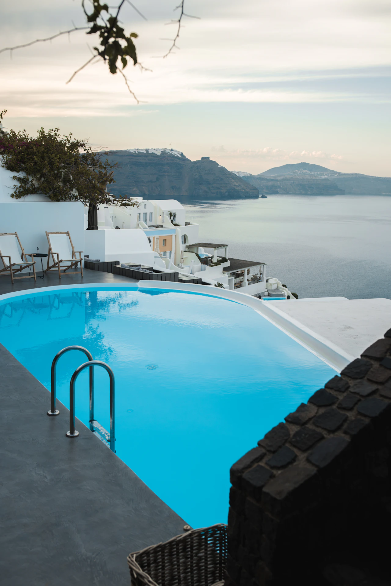
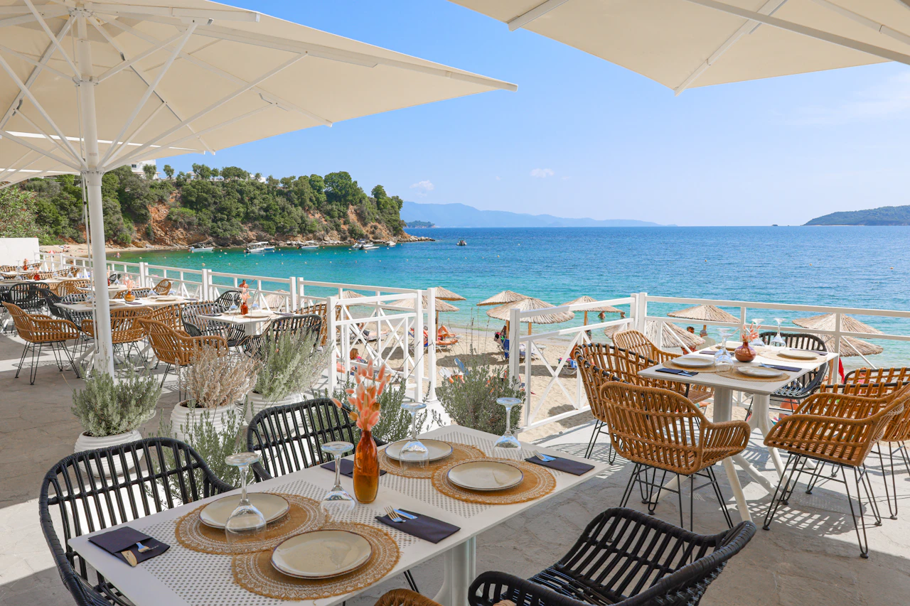
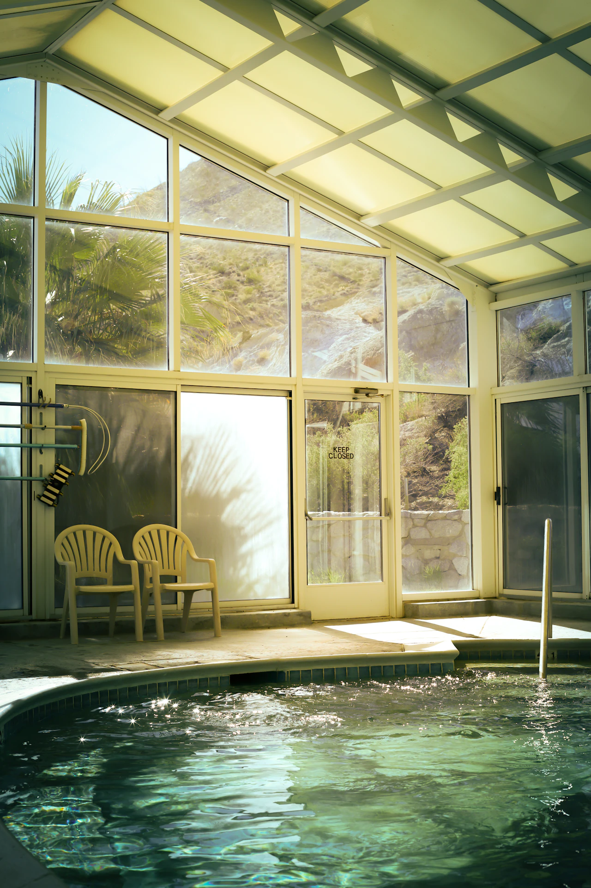

Suíte Terraço do Mar
Um refúgio iluminado para dois, com terraço privativo voltado para a baía e área de estar para aproveitar as manhãs sem pressa.
A partir de US$ 850 / diária
Um refúgio cinco estrelas à beira-mar
A essência do Mediterrâneo
Um refúgio à beira-mar. Uma estadia só sua.
Na fictícia Baía de Aurelia, espaços mediterrâneos, gastronomia e hospitalidade acompanham o seu ritmo.
Descubra nossas suítes → Explore as experiências do resort

Conforto e cuidado em cada detalhe
À beira-mar do Mediterrâneo
Sabores locais e experiências exclusivas
Spa, lazer e equilíbrio para o seu ritmo
Um refúgio iluminado para dois, com terraço privativo voltado para a baía e área de estar para aproveitar as manhãs sem pressa.
A partir de US$ 850 / diária

Uma suíte reservada, com piscina privativa, terraço protegido para tomar sol e sala de estar ampla integrada à área externa.
A partir de US$ 1.250 / diária

Nossa acomodação mais ampla combina dois quartos privativos, espaços generosos de convivência e um terraço panorâmico para refeições.
A partir de US$ 2.400 / diária
Uma conexão com o lugar
Caminhadas pelo litoral, sabores da estação e rituais de spa. Descubra o destino no seu tempo.
Conheça as experiências
Cardápios sazonais de inspiração mediterrânea valorizam ingredientes frescos, frutos do mar de origem selecionada e o cuidado de uma cozinha que respeita os sabores. No terraço ao ar livre, os almoços se estendem e os jantares ganham a luz das velas.

A arte de desacelerar.
Salas tranquilas, rituais corporais restauradores e jornadas de relaxamento personalizadas oferecem uma pausa acolhedora entre os dias de descoberta.

Além do cotidiano
Siga a sua curiosidade.
Explore enseadas protegidas e paisagens de mar aberto em um passeio de veleiro sem pressa, com tempo para nadar e saborear um piquenique preparado, quando as condições permitirem.
O luxo de se sentir em casa
Terraços privativos e espaços para descansar, a dois ou em boa companhia. Escolha entre as três suítes da coleção Aurelia.
Conheça os detalhes e as comodidades →
Cuidado em cada detalhe
Da chegada às ocasiões especiais, cuidado em cada detalhe.